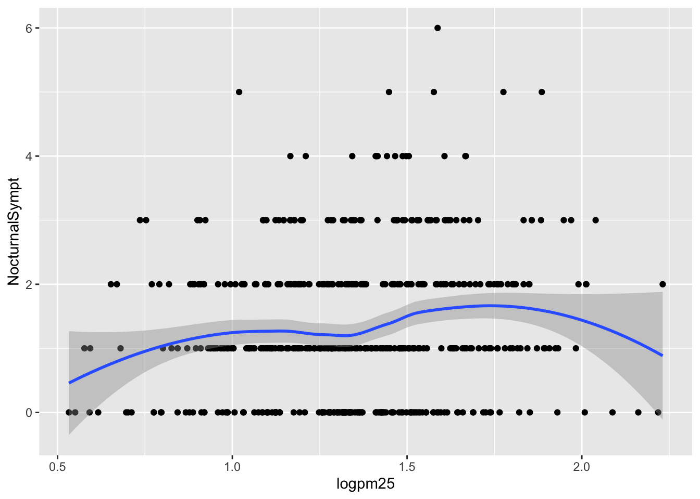
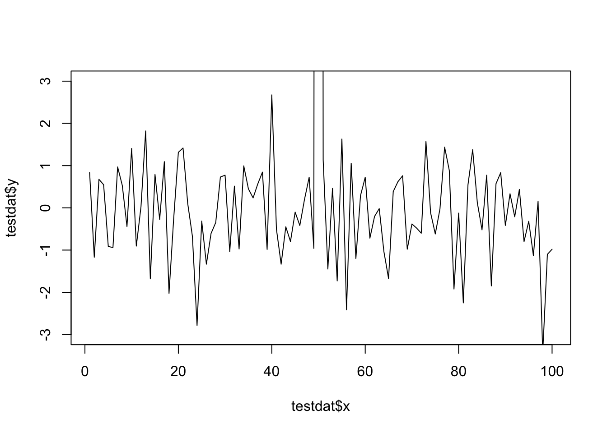
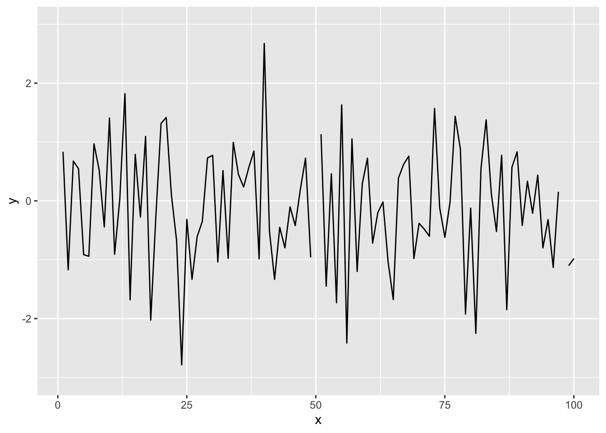

Be able to build up layers of graphics using ggplot()
Be able to modify properties of a ggplot() including layers and labels
The ggplot2 Plotting System
In this lesson, we will get into a little more of the nitty gritty of how ggplot2 builds plots and how you can customize various aspects of any plot.
Previously, we used the qplot() function to quickly put points on a page.
The qplot() function’s syntax is very similar to that of the plot() function in base graphics so for those switching over, it makes for an easy transition.
But it is worth knowing the underlying details of how ggplot2 works so that you can really exploit its power.
Basic components of a ggplot2 plot
Key components
A ggplot2 plot consists of a number of key components.
A data frame: stores all of the data that will be displayed on the plot
aesthetic mappings: describe how data are mapped to color, size, shape, location
geoms: geometric objects like points, lines, shapes.
facets: describes how conditional/panel plots should be constructed
stats: statistical transformations like binning, quantiles, smoothing.
scales: what scale an aesthetic map uses (example: left-handed = red, right-handed = blue).
coordinate system: describes the system in which the locations of the geoms will be drawn
It is essential to organize your data into a data frame before you start with ggplot2 (and all the appropriate metadata so that your data frame is self-describing and your plots will be self-documenting).
When building plots in ggplot2 (rather than using qplot()), the “artist’s palette” model may be the closest analogy.
Essentially, you start with some raw data, and then you gradually add bits and pieces to it to create a plot.
Note
Plots are built up in layers, with the typically ordering being
Plot the data
Overlay a summary
Add metadata and annotation
For quick exploratory plots you may not get past step 1.
Example: BMI, PM2.5, Asthma
To demonstrate the various pieces of ggplot2 we will use a running example from the Mouse Allergen and Asthma Cohort Study (MAACS), which was used as a case study in the previous lesson. Here, the question we are interested in is
“Are overweight individuals, as measured by body mass index (BMI), more susceptible than normal weight individuals to the harmful effects of PM2.5 on asthma symptoms?”
There is a suggestion that overweight individuals may be more susceptible to the negative effects of inhaling PM2.5.
This would suggest that increases in PM2.5 exposure in the home of an overweight child would be more deleterious to his/her asthma symptoms than they would be in the home of a normal weight child.
We want to see if we can see that difference in the data from MAACS.
Note
Because the individual-level data for this study are protected by various U.S. privacy laws, we cannot make those data available.
For the purposes of this lesson, we have simulated data that share many of the same features of the original data, but do not contain any of the actual measurements or values contained in the original dataset.
Example
We can look at the data quickly by reading it in as a tibble with read_csv() in the tidyverse package.
# A tibble: 517 × 4
logpm25 logno2_new bmicat NocturnalSympt
<dbl> <dbl> <chr> <int>
1 1.25 1.18 normal weight 1
2 1.12 1.55 overweight 0
3 1.93 1.43 normal weight 0
4 1.37 1.77 overweight 2
5 0.775 0.765 normal weight 0
6 1.49 1.11 normal weight 0
7 2.16 1.43 normal weight 0
8 1.65 1.40 normal weight 0
9 1.55 1.81 normal weight 0
10 2.04 1.35 overweight 3
# … with 507 more rows
The outcome we will look at here, NocturnalSymp, is the number of days in the past 2 weeks where the child experienced asthma symptoms (e.g. coughing, wheezing) while sleeping.
The other key variables are:
logpm25: average level of PM2.5 over the course of 7 days (micrograms per cubic meter) on the log scale
logno2_new: exhaled nitric oxide on the log scale
bmicat: categorical variable with BMI status
Building up in layers
First, we can create a ggplot object that stores the dataset and the basic aesthetics for mapping the x- and y-coordinates for the plot.
Example
Here, we will eventually be plotting the log of PM2.5 and NocturnalSymp variable.
g <-ggplot(maacs, aes(x = logpm25, y = NocturnalSympt))summary(g)
data: logpm25, logno2_new, bmicat, NocturnalSympt [517x4]
mapping: x = ~logpm25, y = ~NocturnalSympt
faceting: <ggproto object: Class FacetNull, Facet, gg>
compute_layout: function
draw_back: function
draw_front: function
draw_labels: function
draw_panels: function
finish_data: function
init_scales: function
map_data: function
params: list
setup_data: function
setup_params: function
shrink: TRUE
train_scales: function
vars: function
super: <ggproto object: Class FacetNull, Facet, gg>
class(g)
[1] "gg" "ggplot"
You can see above that the object g contains the dataset maacs and the mappings.
Now, normally if you were to print() a ggplot object a plot would appear on the plot device, however, our object g actually does not contain enough information to make a plot yet.
g <- maacs %>%ggplot(aes(logpm25, NocturnalSympt))print(g)
Nothing to see here!
First plot with point layer
To make a scatter plot, we need add at least one geom, such as points.
Here, we add the geom_point() function to create a traditional scatter plot.
g <- maacs %>%ggplot(aes(logpm25, NocturnalSympt))g +geom_point()
Scatterplot of PM2.5 and days with nocturnal symptoms
How does ggplot know what points to plot? In this case, it can grab them from the data frame maacs that served as the input into the ggplot() function.
Adding more layers
smooth
Because the data appear rather noisy, it might be better if we added a smoother on top of the points to see if there is a trend in the data with PM2.5.
g +geom_point() +geom_smooth()

Scatterplot with smoother
The default smoother is a loess smoother, which is flexible and nonparametric but might be too flexible for our purposes. Perhaps we’d prefer a simple linear regression line to highlight any first order trends. We can do this by specifying method = "lm" to geom_smooth().
g +geom_point() +geom_smooth(method ="lm")
Scatterplot with linear regression line
Here, we can see there appears to be a slight increasing trend, suggesting that higher levels of PM2.5 are associated with increased days with nocturnal symptoms.
Question
Let’s use the ggplot() function with our palmerpenguins dataset example and make a scatter plot with flipper_length_mm on the x-axis, bill_length_mm on the y-axis, colored by species, and a smoother by adding a linear regression.
# try it yourselflibrary(palmerpenguins)penguins
# A tibble: 344 × 8
species island bill_length_mm bill_depth_mm flipper_…¹ body_…² sex year
<fct> <fct> <dbl> <dbl> <int> <int> <fct> <int>
1 Adelie Torgersen 39.1 18.7 181 3750 male 2007
2 Adelie Torgersen 39.5 17.4 186 3800 fema… 2007
3 Adelie Torgersen 40.3 18 195 3250 fema… 2007
4 Adelie Torgersen NA NA NA NA <NA> 2007
5 Adelie Torgersen 36.7 19.3 193 3450 fema… 2007
6 Adelie Torgersen 39.3 20.6 190 3650 male 2007
7 Adelie Torgersen 38.9 17.8 181 3625 fema… 2007
8 Adelie Torgersen 39.2 19.6 195 4675 male 2007
9 Adelie Torgersen 34.1 18.1 193 3475 <NA> 2007
10 Adelie Torgersen 42 20.2 190 4250 <NA> 2007
# … with 334 more rows, and abbreviated variable names ¹flipper_length_mm,
# ²body_mass_g
facets
Because our primary question involves comparing overweight individuals to normal weight individuals, we can stratify the scatter plot of PM2.5 and nocturnal symptoms by the BMI category (bmicat) variable, which indicates whether an individual is overweight or now.
To visualize this we can add a facet_grid(), which takes a formula argument.
Example
We want one row and two columns, one column for each weight category. So we specify bmicat on the right hand side of the forumla passed to facet_grid().
g +geom_point() +geom_smooth(method ="lm") +facet_grid(. ~ bmicat)
Scatterplot of PM2.5 and nocturnal symptoms by BMI category
Now it seems clear that the relationship between PM2.5 and nocturnal symptoms is relatively flat among normal weight individuals, while the relationship is increasing among overweight individuals.
This plot suggests that overweight individuals may be more susceptible to the effects of PM2.5.
Modifying geom properties
You can modify properties of geoms by specifying options to their respective geom_*() functions.
Example
For example, here we modify the points in the scatterplot to make the color “steelblue”, the size larger, and the alpha transparency greater.
g +geom_point(color ="steelblue", size =4, alpha =1/2)
Modifying point color with a constant
map aesthetics to variables
In addition to setting specific geom attributes to constants, we can map aesthetics to variables.
For example, we can map the aesthetic color to the variable bmicat, so the points will be colored according to the levels of bmicat.
We use the aes() function to indicate this difference from the plot above.
g +geom_point(aes(color = bmicat), size =4, alpha =1/2)
Mapping color to a variable
Customizing the smooth
We can also customize aspects of the geoms.
For example, we can customize the smoother that we overlay on the points with geom_smooth().
Here we change the line type and increase the size from the default. We also remove the shaded standard error from the line.
g +geom_point(aes(color = bmicat), size =2, alpha =1/2) +geom_smooth(size =4, linetype =3, method ="lm", se =FALSE)
Customizing a smoother
Modifying labels
Note
There are a variety of annotations you can add to a plot, including different kinds of labels.
xlab() for x-axis labels
ylab() for y-axis labels
ggtitle() for specifying plot titles
labs() function is generic and can be used to modify multiple types of labels at once
Here is an example of modifying the title and the x and y labels to make the plot a bit more informative.
g +geom_point(aes(color = bmicat)) +labs(title ="MAACS Cohort") +labs(x =expression("log "* PM[2.5]), y ="Nocturnal Symptoms")
Modifying plot labels
Changing the theme
The default theme for ggplot2 uses the gray background with white grid lines.
If you don’t find this suitable, you can use the black and white theme by using the theme_bw() function.
The theme_bw() function also allows you to set the typeface for the plot, in case you don’t want the default Helvetica. Here we change the typeface to Times.
Note
For things that only make sense globally, use theme(), i.e. theme(legend.position = "none"). Two standard appearance themes are included
theme_gray(): The default theme (gray background)
theme_bw(): More stark/plain
g +geom_point(aes(color = bmicat)) +theme_bw(base_family ="Times")
Modifying the theme for a plot
Question
Let’s take our palmerpenguins scatterplot from above and change out the theme to use theme_dark().
# try it yourselflibrary(palmerpenguins)penguins
# A tibble: 344 × 8
species island bill_length_mm bill_depth_mm flipper_…¹ body_…² sex year
<fct> <fct> <dbl> <dbl> <int> <int> <fct> <int>
1 Adelie Torgersen 39.1 18.7 181 3750 male 2007
2 Adelie Torgersen 39.5 17.4 186 3800 fema… 2007
3 Adelie Torgersen 40.3 18 195 3250 fema… 2007
4 Adelie Torgersen NA NA NA NA <NA> 2007
5 Adelie Torgersen 36.7 19.3 193 3450 fema… 2007
6 Adelie Torgersen 39.3 20.6 190 3650 male 2007
7 Adelie Torgersen 38.9 17.8 181 3625 fema… 2007
8 Adelie Torgersen 39.2 19.6 195 4675 male 2007
9 Adelie Torgersen 34.1 18.1 193 3475 <NA> 2007
10 Adelie Torgersen 42 20.2 190 4250 <NA> 2007
# … with 334 more rows, and abbreviated variable names ¹flipper_length_mm,
# ²body_mass_g
A quick aside about axis limits
One quick quirk about ggplot2 that caught me up when I first started using the package can be displayed in the following example. I make a lot of time series plots and I often want to restrict the range of the y-axis while still plotting all the data. In the base graphics system you can do that as follows.
testdat <-data.frame(x =1:100, y =rnorm(100))testdat[50,2] <-100## Outlier!plot(testdat$x, testdat$y, type ="l", ylim =c(-3,3))

Time series plot with base graphics
Here I’ve restricted the y-axis range to be between -3 and 3, even though there is a clear outlier in the data.
With ggplot2 the default settings will give you this.
g <-ggplot(testdat, aes(x = x, y = y))g +geom_line()
Time series plot with default settings
Modifying the ylim() attribute would seem to give you the same thing as the base plot, but it doesn’t.
g +geom_line() +ylim(-3, 3)

Time series plot with modified ylim
Effectively, what this does is subset the data so that only observations between -3 and 3 are included, then plot the data.
To plot the data without subsetting it first and still get the restricted range, you have to do the following.
g +geom_line() +coord_cartesian(ylim =c(-3, 3))
Time series plot with restricted y-axis range
And now you know!
Resources
The ggplot2 book by Hadley Wickham
The R Graphics Cookbook by Winston Chang (examples in base plots and in ggplot2)
Now you get the sense that plots in the ggplot2 system are constructed by successively adding components to the plot, starting with the base dataset and maybe a scatterplot. In this section bleow, you can see a slightly more complicated example with an additional variable.
Click here for a slightly more complicated example with ggplot().
Now, we will ask the question
How does the relationship between PM2.5 and nocturnal symptoms vary by BMI category and nitrogen dioxide (NO2)?
Unlike our previous BMI variable, NO2 is continuous, and so we need to make NO2 categorical so we can condition on it in the plotting. We can use the cut() function for this purpose. We will divide the NO2 variable into tertiles.
First we need to calculate the tertiles with the quantile() function.
PM2.5 and nocturnal symptoms by BMI category and NO2 tertile
Final Questions
Here are some post-lecture questions to help you think about the material discussed.
Questions
What happens if you facet on a continuous variable?
Read ?facet_wrap. What does nrow do? What does ncol do? What other options control the layout of the individual panels? Why doesn’t facet_grid() have nrow and ncol arguments?
What geom would you use to draw a line chart? A boxplot? A histogram? An area chart?
What does geom_col() do? How is it different to geom_bar()?